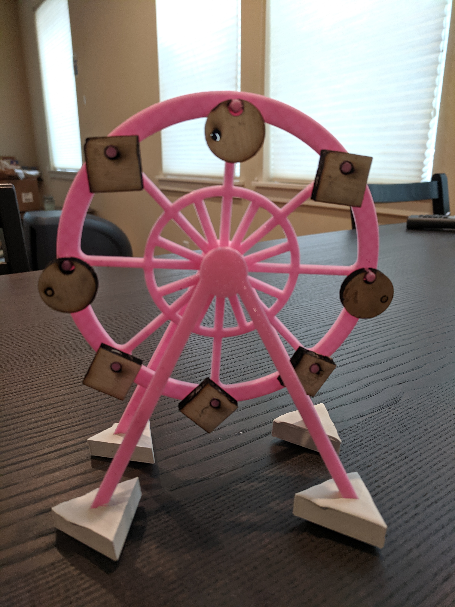
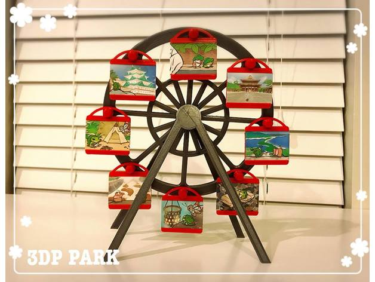
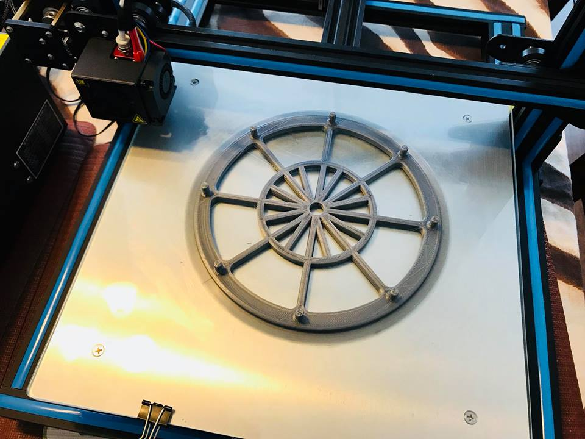
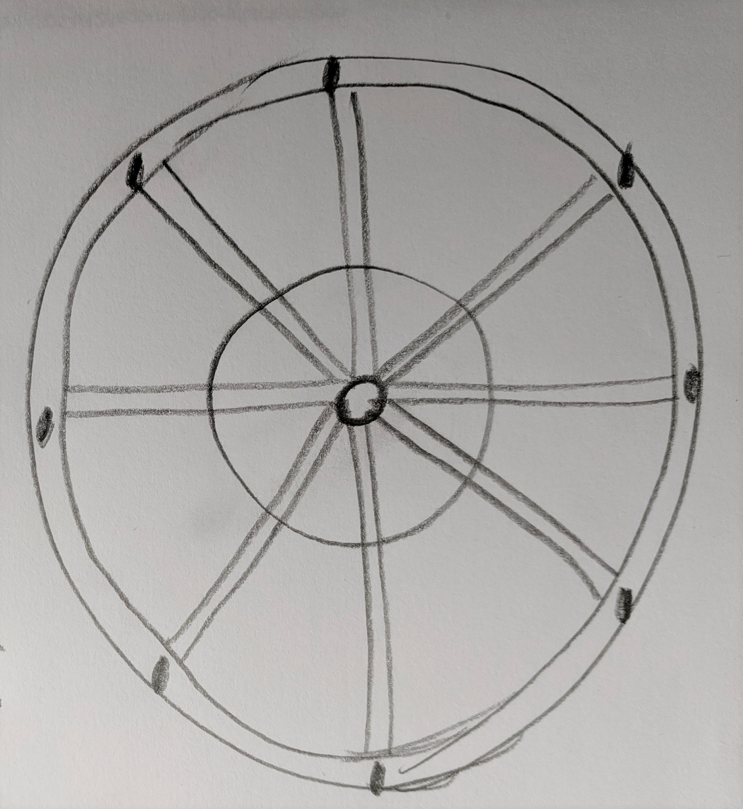
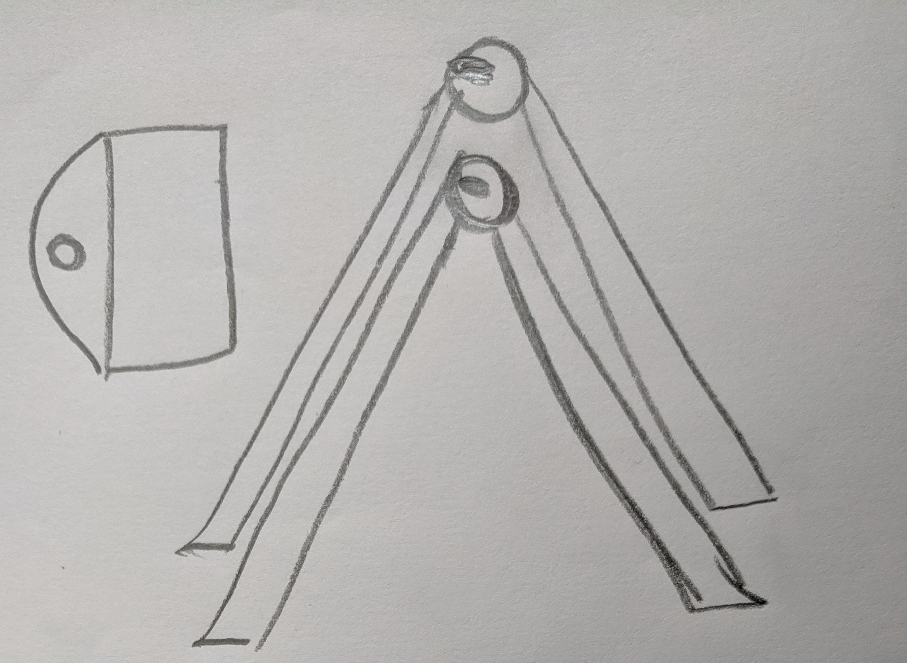
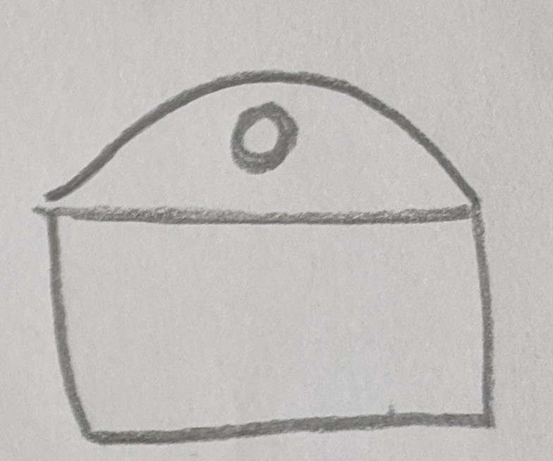

Final Project: Ferris Wheel

For the final project, I made a Ferris Wheel.
Final Presentation
" allowfullscreen>
Source Files
Part 1: Wheel
Part 2: Base
Part 3: Hanging parts
Design Inspiration Source
I got the design inspiration & original STL files from Thingiverse. Yayy for Commons Attribution!
Ferris Wheel Photo Frame via Thingiverse



Project Approach
Step 1: Wheel
I plan to create the ferris wheel by 3D printing it. I plan to keep the wheel no larger than 5 inches to ensure that printing time is not extended.
Time estimate: 3 hours to create the file on OnShape and 5-6 hours to print it.
Contingency plan: If 3D printing takes too much time, I'll laser cut the wheel using thick cardboard or acrylic.

Step 2: Base stand
I plan to laser-cut the base stand using 3mm cardboard.
Time estimate: 30 mins to create the file using AI and 30 mins to laser cut the parts.
Contingency plan: If the material is not stable, I may end up 3D printing the base instead of laser cutting it.

Step 3: Photo frame part
I plan to create a mold for the photo frame parts. Having a mold will make it quick to replicate.
Time estimate: 1 hour to create the file using OnShape, 2 hours to 3D print, 6 hours to create the mold using silicone (OOMO), and 2 hours for each plaster part.
Contingency plan: Since this is the most time consuming part of the project, I may resort to laser cutting the parts.

Bill of Materials
Acrylic sheet to laser cut: 12x12 inches: $12
Filament to 3D: $18
To be purchased from the Mill or Amazon.
3mm cardboard: 12x12 inches: $25
To be purchased from Home Depot.
OOMO Silicone: $26
Purchased for previous project, I have left over silicone to create the mold.
Plaster: $5
Purchased for previous project, I have left over plaster to create the photo frame replicates.
Total Cost: $86
Final Output
To be updated
Issues encountered & lessons learnt
To be updated.
Peer Attributions
To be updated